welcome
hello and welcome to oldoldmold, a place full of dreams, inspirations, doodles, thoughts, prayers, love, hate, joy, sorrow, and whatever else!
---august favorites---
greg mendez self titled, arthur russell love is overtaking me, mariangela celeste my dear life, otto, hardboiled eggs, turn turn turn, laurelthirst open mic, planet of the apes, the wameki, dostoevsky's the idiot, dyskolos, ugly betty, kevin can f himself, dark winds, parallel parking, french exits, tryon creek, orangutans, free water shrew ensemble, sea moss, vyvanse + zoloft, going no contact, cig walks, my neighborhood, work gossip, at eternity's gate sketches, three finger drag
please please send me your artwork, writing, photos, whatever else that can be added to an internet website such as this one!
i guess i don't have much else to say for now so here are some doodles i had laying around
sep 1 2024
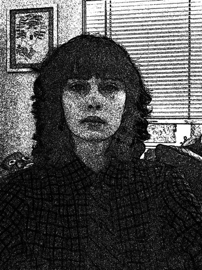 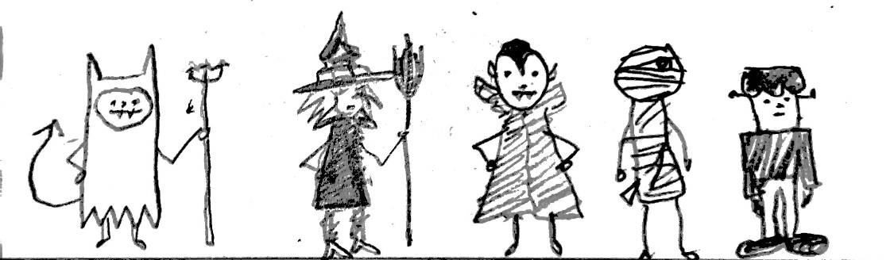 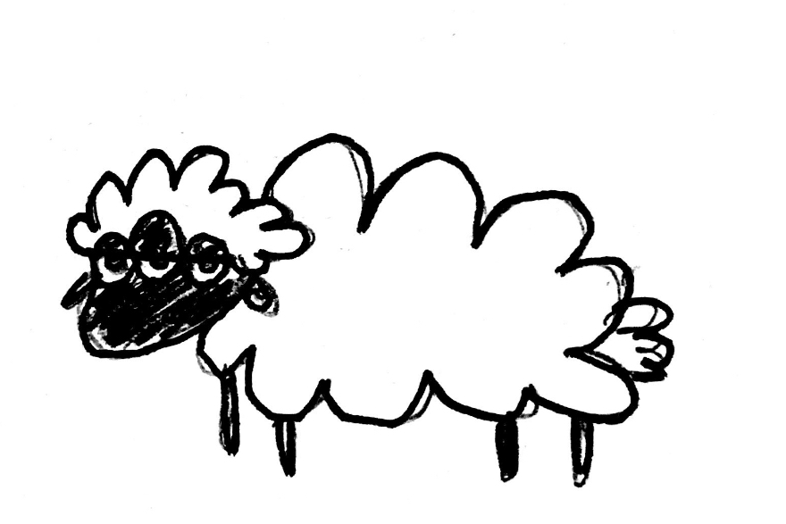 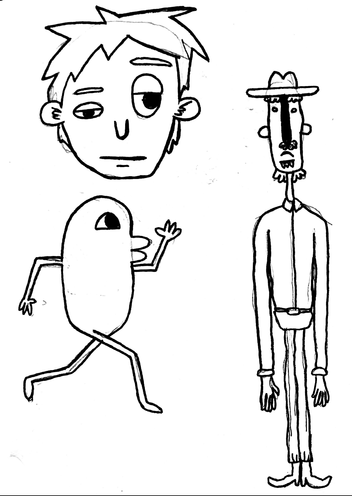 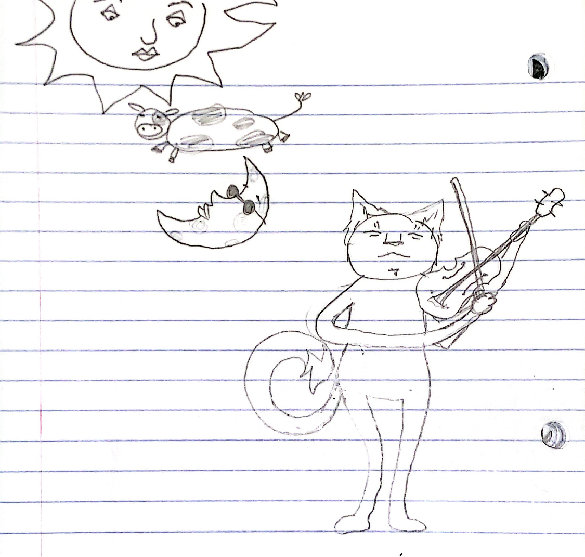 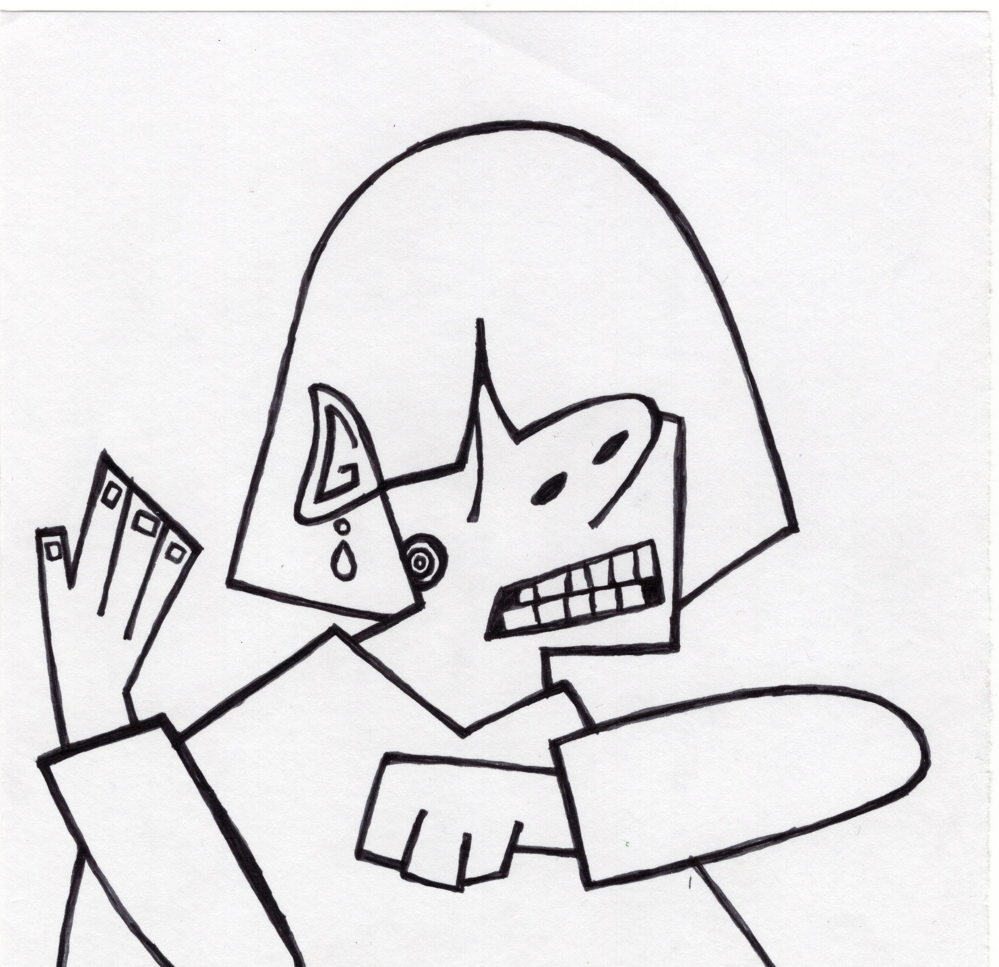 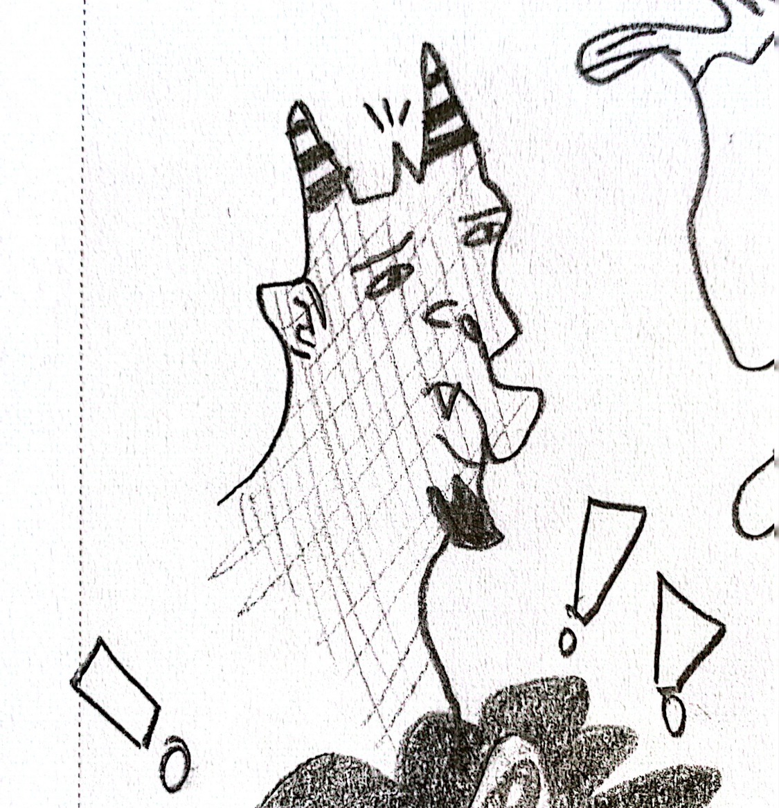
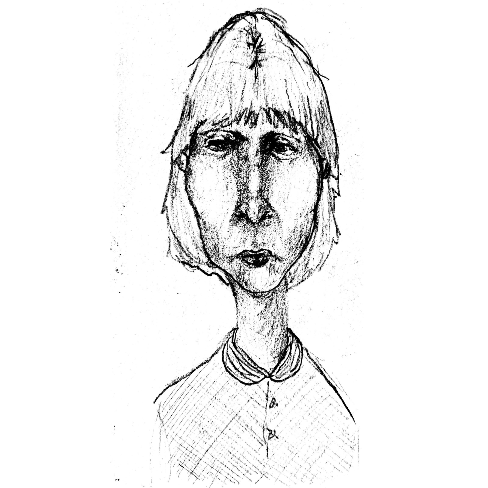
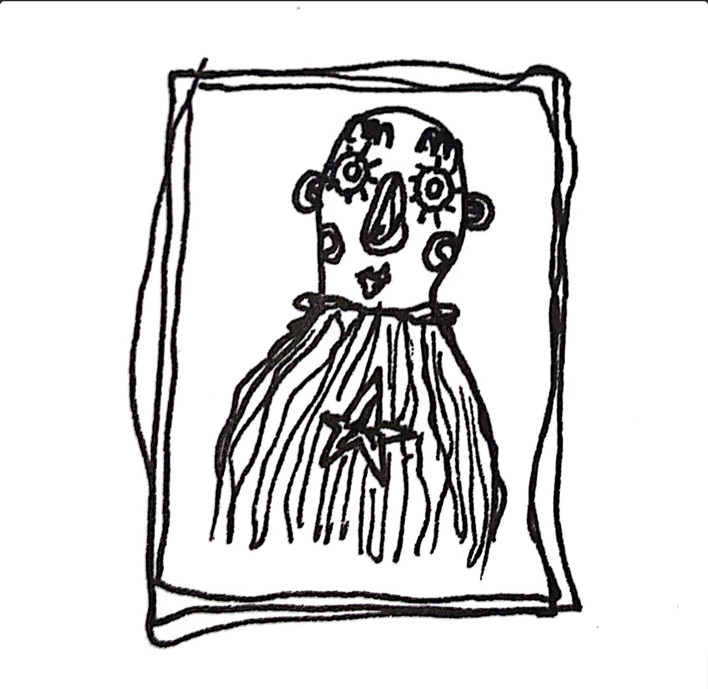
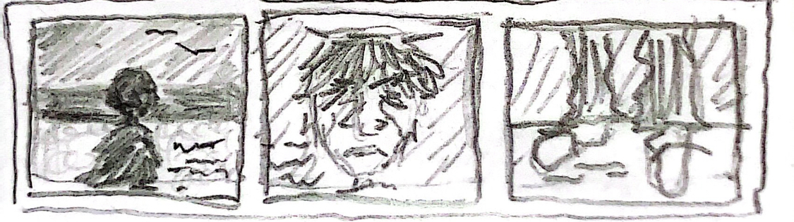
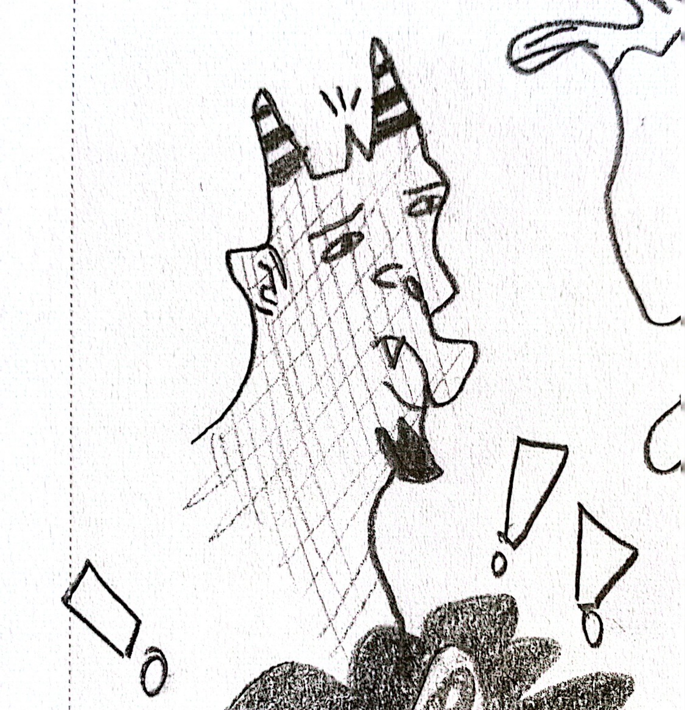
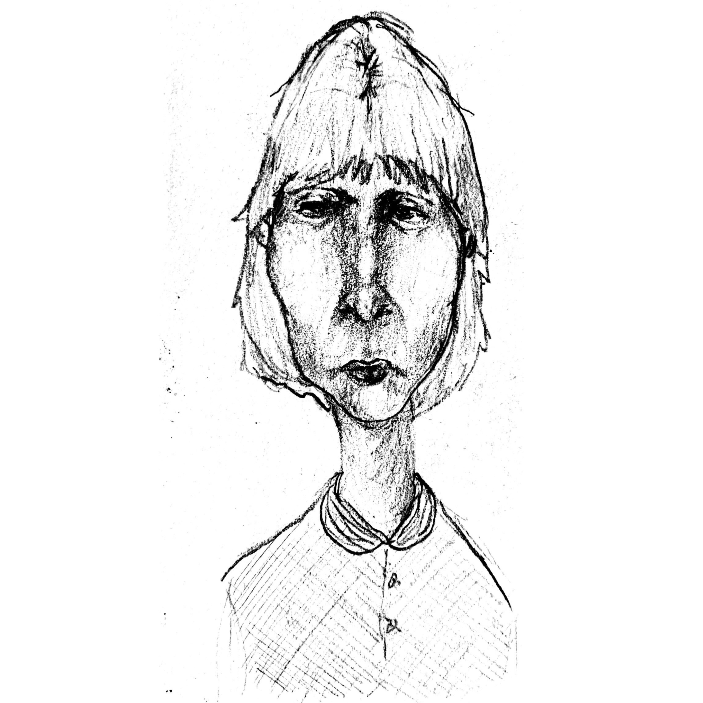
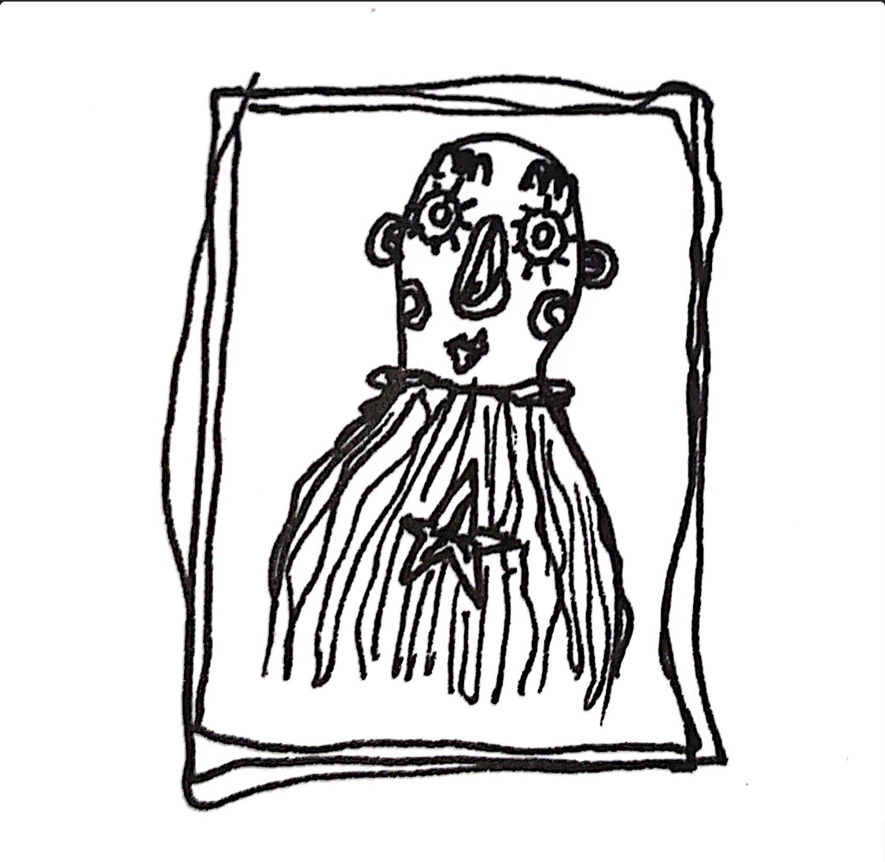
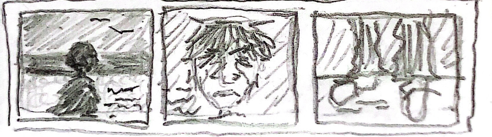